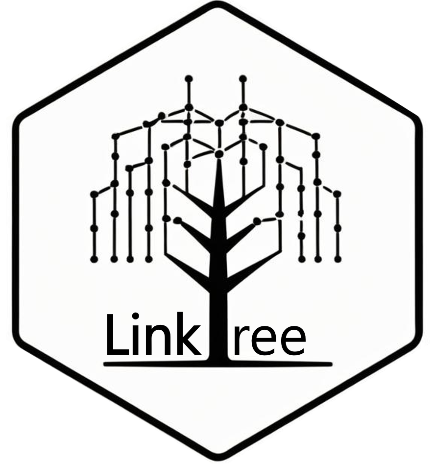

linktree

linktree is a novel framework that leverages transmission chain data to estimate group transmission assortativity; this quantifies the extent to which individuals transmit within their own group compared to others. The methodology is described in our paper.
Documentation
For more information, check the dedicated website.